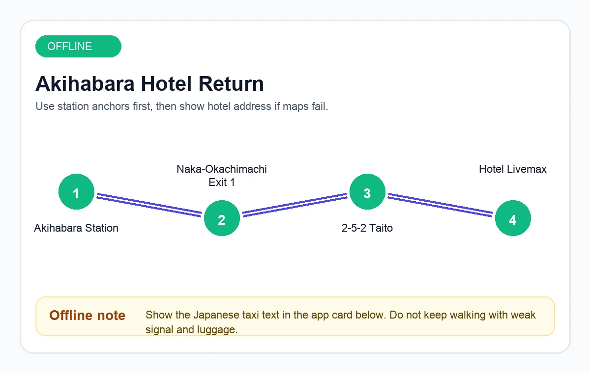
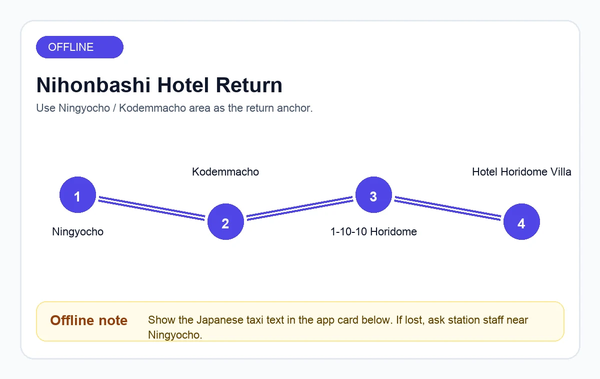
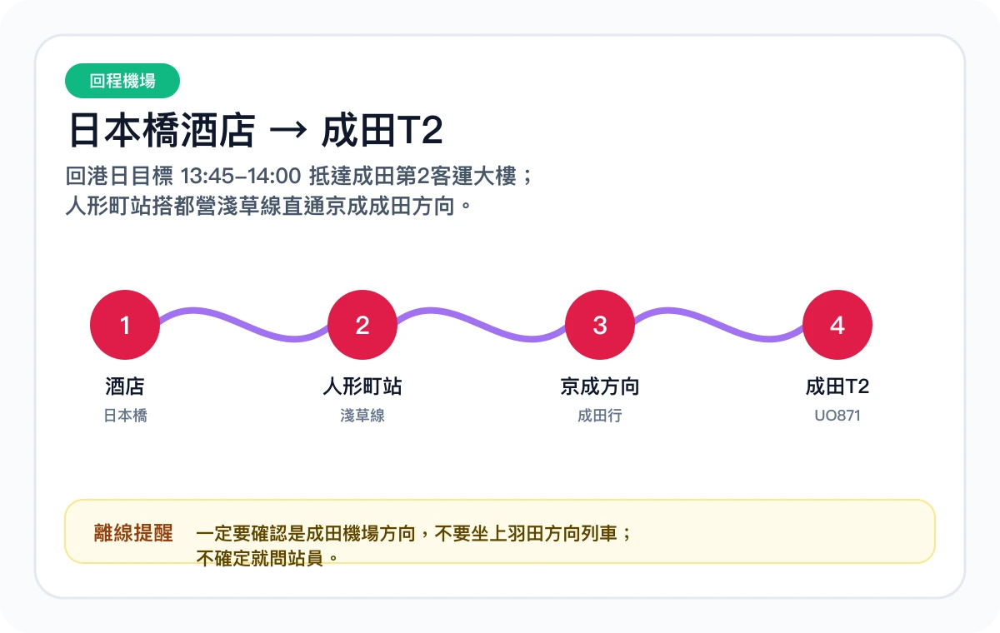
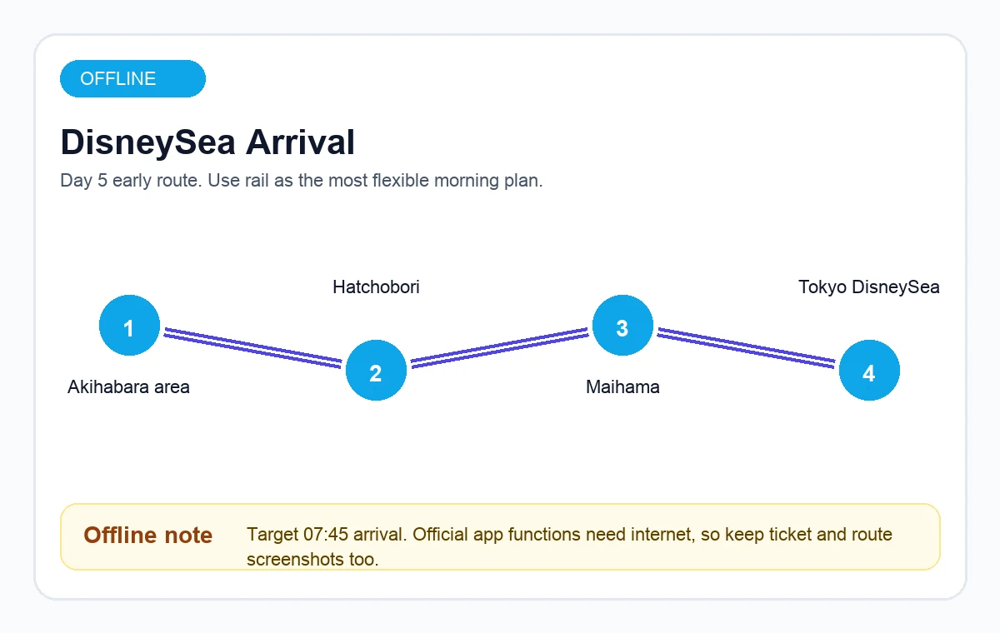

東京夜色與購物街秋葉原、澀谷、新宿、銀座、東京站，一路買一路吃。touch_app 打開購物地圖
今日模式
正在載入今日行程…
出發--
目標--
基地--
今日重點會按旅行日期自動顯示，也可以手動選日數。
favorite 東京約會旅行
16日東京約會旅行，從秋葉原玩到迪士尼海洋、富士山與鎌倉海邊。
這版不只是行程表，而是旅行作戰地圖：每天有節奏、有備案、有期待位，方便你們邊玩邊決定下一站。
到東京後優先用這 4 個入口
每日只看一日、交通開 Google 地圖、天氣可即時改排、清單確認票券與回程。
near_me 旅行口袋工具
旅途中常用入口集中在這裡：地圖、今日詳情、酒店、預約、天氣備案與回程交通。
東京鐵塔散策築地海鮮早宴後，芝公園拍照最舒服。touch_app 查看第4日
Shibuya Sky 黃昏7月7日改成澀谷展望台約會，黃昏前看風雨與能見度。touch_app 查看第11日
鎌倉海邊一日江之電、湘南海岸、夕方散步，放慢節奏。touch_app 查看第13日
清澄白河咖啡緩衝合羽橋、蔵前、清澄白河，作為第14日天氣保險位最穩。touch_app 查看第14日
旅行路線地圖
用兩個住宿基地控制移動成本：前半段秋葉原玩市區、池袋澀谷、新宿與迪士尼海洋；後半段日本橋接 teamLab、Shibuya Sky、富士山、鎌倉與回程。
looks_one
第1-8日｜秋葉原基地原區熟習、池袋澀谷、築地東京鐵塔、迪士尼海洋、春日部晴空塔、原宿表參道與新宿夜購。
looks_two
第9日｜的士轉酒店轉到日本橋後只安排附近熟習、午餐與輕購物，不塞預約景點。
looks_3
第10-14日｜沉浸展覽與天氣防線teamLab 早場、Shibuya Sky 黃昏、富士山、鎌倉、市區咖啡/購物緩衝互相支援。
flight_takeoff
第15-16日｜手信與回港日本橋/東京站最後補貨，人形町 Access 特急直達成田T2。
flight_takeoff 已訂航班資訊
總價 HKD 8,312 verified
去程
flight_takeoff
HK Express UO848
09:15
HKG 香港國際機場
6月27日 週六｜第2客運大樓 / U 區
4小時30分鐘
flight
直飛
14:45
NRT 成田國際機場
第2客運大樓
回程
flight_land
HK Express UO871
17:05
NRT 成田國際機場
7月12日 週日｜第2客運大樓
4小時55分鐘
flight
直飛
21:00
HKG 香港國際機場
第1客運大樓抵港
2026年6月20日已核對：HK Express 香港出發使用香港機場第2客運大樓 U 區辦理登機手續 / 行李托運；成田使用第2客運大樓 / 3樓。航班時間、閘口與櫃位仍以航空公司及機場即日公告為準。
hotel 已確認住宿酒店
第1段住宿｜6月27日 – 7月5日（8夜）
task_alt
秋葉原北 Livemax 酒店
適合安排：秋葉原、上野、池袋/澀谷、築地、春日部、晴空塔、迪士尼海洋出發。
第2段住宿｜7月5日 – 7月12日（7夜）
task_alt
堀留 Villa 酒店
適合安排：麻布台、台場、富士山/鎌倉集合、日本橋/東京站、合羽橋/蔵前/清澄白河、成田回程。
push_pin 已核對重點事實
castle 迪士尼海洋 7/1
官方月曆顯示 2026年7月1日（週三）東京迪士尼海洋開放 9:00-21:00，成人一日護照門票為 7,900円。此日為週三，符合「平日避人潮」策略。
confirmation_number 迪士尼門票
官方門票每日日本時間 14:00 開售「兩個月後同日」入園票。7月1日門票理論上 5月1日 14:00 起可買，售罄亦可能再釋出。
smartphone 官方應用程式 / DPA
Disney Premier Access 需在官方應用程式購買，Fantasy Springs（魔幻泉鄉）熱門項目如 Frozen、Rapunzel、Peter Pan 為 2,000円級別，數量有限。
train 交通策略
早到優先用 JR：日比谷線接八丁堀，轉 JR 京葉/武藏野線到舞濱，再乘迪士尼度假區線到東京迪士尼海洋站。
table 版本 12.4｜迪士尼海洋強勢進駐總表
以人潮、天氣與酒店基地重新排序：迪士尼海洋放在 7月1日黃金平日，合羽橋文青線移至日本橋住宿段。
| 日期 / 日數 | 修改後的主行程規劃 | 住宿基地 | 天氣 / 人潮防線策略 |
|---|
每日詳細行程：第1-16日已全部補齊。每張卡改為分頁式：重點、交通、時間、預算、食物、確認。交通與食物分頁已加入 Google 地圖快捷鍵，可直接開 App 查最快路線、附近餐廳與即時班次。
16日每日行程索引
檢查中
點日數只顯示該日詳情；進入卡內再切換重點/交通/預算/食物，避免一直向下滑。
castle 7月1日（第5日）東京迪士尼海洋作戰室
9:00-21:00｜成人 7,900円directions_bus 方案 A｜直達巴士（少轉乘）
東京迪士尼度假區官方列出由秋葉原出發巴士約 50-60 分鐘。優點是免轉車、雨天少走路；缺點是班次可能較少，未必適合 07:45 抵達排隊目標。出發前一晚必須查官方/營運公司時刻表與乘車位置。
train 方案 B｜JR 鐵路（早到首選）
由酒店步行至仲御徒町/秋葉原，乘日比谷線到八丁堀，再轉 JR 京葉線或武藏野線往舞濱。抵達舞濱後左轉往度假區總站，乘迪士尼度假區線到東京迪士尼海洋站。
alarm 07:45 抵達排隊
官方開園為 09:00，但官方亦提醒部分情況可能提早開始入園。若想搶 DPA / 優先通行服務，建議 06:25-06:40 由酒店出發，目標 07:45 到閘口外。
bolt 入園瞬間官方應用程式流程
過閘後立即開官方應用程式：先確認整團門票，購買 Disney Premier Access；再查看 40週年優先通行服務、抽選、手機點餐與等候通行服務狀態。
warning Fantasy Springs（魔幻泉鄉）修正
Fantasy Springs 於 2024年6月開幕。2026年請以官方應用程式顯示為準；目前官方等候通行服務清單主要是商店/膠囊玩具等指定場地，不應假設新園區機動遊戲仍需免費等候通行服務。
format_list_numbered 建議當日節奏
- 06:25-06:40 酒店出發，使用 JR 鐵路線做早到主方案。
- 07:45 抵達東京迪士尼海洋入園排隊，先整理官方應用程式、信用卡與門票群組。
- 入園後 0-5 分鐘 優先搶 Fantasy Springs 熱門 DPA：Anna and Elsa's Frozen Journey、Rapunzel's Lantern Festival、Peter Pan's Never Land Adventure。
- 中午後 用手機點餐 / 餐廳預約減少排隊，保留體力到 Believe! Sea of Dreams 或夜間散步。
- 20:45-21:30 視體力與人潮離園，JR 舞濱回市區；若有回程巴士班次再考慮巴士。
hotel 酒店快速卡
旅途中最常用的酒店入口。系統會按旅程日期顯示目前基地，也可直接打開兩間酒店地圖或回程導航。
目前住宿秋葉原北 Livemax 酒店
基地秋葉原
住宿日期6月27日 - 7月5日
map Google 地圖已準備好｜購物與約會地圖
手機使用優先：每張卡都有 Google 地圖搜尋連結，到日本後直接開啟即可導航、收藏或查看營業時間。
旅程地圖｜酒店、景點、購物、回程重點
把整趟最常用點位集中在一張地圖：兩間酒店、主要購物區、重點景點與成田回程。
pin_drop 已標示重點
directions 可開交通導航
bookmark_add 適合收藏清單
這個總覽適合出發前收藏重點。實際移動時用下面各區路線，會比一次導航全部點更準。
澀谷｜PARCO / Scramble Square / 宮下公園
第3日做澀谷購物，第11日再回來做 Shibuya Sky 黃昏展望台。角色、潮流、餐廳和夜景分開會更舒服。
池袋 / 秋葉原｜Sunshine City / Animate / Yodobashi
第2、3日覆蓋角色、動漫、電器與扭蛋。買大件先回秋葉原酒店放低。
route 購物日安排
第2日秋葉原 + 上野 + 阿美橫町：電器、藥妝、零食、動漫周邊。
第3日池袋 + 澀谷：Sunshine City、PARCO、Scramble Square，今日不趕展望台。
第11日澀谷 + Shibuya Sky：黃昏展望台移到 7月7日，按風雨與能見度確認露天區。
第7日銀座 + 有樂町 + 東京站：精品百貨、MUJI Ginza、一番街、拉麵街，雨天最強。
第8日原宿 + 表參道 + 新宿夜購：白天街頭潮流，傍晚可加新宿 Isetan / Lumine。
第14日天氣終極緩衝：若不用補富士山/鎌倉，做合羽橋、蔵前、清澄白河，傍晚加新宿百貨。
第15日東京站 + 日本橋最後手信：Character Street、Daimaru、Coredo，買完即回酒店執行李。
routine 梅雨季天氣智能對調方案
第5日迪士尼海洋是門票型固定日，除非颱風級惡劣天氣或官方營運變更，不建議與其他日對調。第11日改為 Shibuya Sky，富士山/鎌倉改由第12-14日按天氣搶窗口。
water_drop 早段天氣檢查｜第1-7日
第一週已有多個雨點，策略不是大搬日程，而是每天加入「室內先行 / 雨弱後戶外 / 固定日帶雨具」的操作模式。
天氣建議根據 2026年6月23日已查預報整理；7月戶外與展望台行程仍要在出發前 24-48 小時重查。
task_alt方案 A｜預設好天氣行程
emergency_home 即時天氣對調模擬器
第11日 Shibuya Sky 已移到 7月7日；黃昏前看風雨與能見度。出發前 24-48 小時，把第12-14日天氣狀態填入，系統會把富士山、鎌倉、市區咖啡/新宿購物重新排序。
等待輸入天氣狀態
- 富士山最重視能見度；好天優先排富士山。
- 鎌倉 / 江之島怕強風與暴雨；風雨大時交給新宿或市區咖啡日。
- 第11日 Shibuya Sky 已固定到 7月7日；第12-14日保持彈性，適合作為補富士山 / 鎌倉的保險位。
emergency_home 回程/求助快速救援
迷路、太累、下大雨、行李太重時，先用這頁。所有按鈕都是直接行動，不需要再翻長文。
離線安全回程
signal_wifi_off 無網絡回酒店資料
這部分全部會放入離線快取。沒有網絡時，可直接顯示地址、的士日文、最近車站與簡化路線圖。
出發前先按一次
會把主頁、樣式/程式、酒店資料、回程資料與離線路線圖放入瀏覽器快取。

秋葉原北 Livemax 酒店
日文地址：〒110-0016 東京都台東区台東2-5-2
英文地址：2-5-2 Taito, Taito-ku, Tokyo 110-0016
最近車站：仲御徒町站 1號出口約5分鐘；JR 秋葉原站約8分鐘。
的士用：ホテルリブマックス秋葉原北（東京都台東区台東2-5-2）までお願いします。

堀留 Villa 酒店
日文地址：〒103-0012 東京都中央区日本橋堀留町1-10-10
英文地址：1-10-10 Nihonbashi Horidome-cho, Chuo-ku, Tokyo 103-0012
最近車站：小傳馬町 / 人形町一帶，步行約3-5分鐘。
的士用：ホテル堀留ヴィラ（東京都中央区日本橋堀留町1-10-10）までお願いします。


checklist 必備行程預約與確認清單
download_for_offline 離線就緒